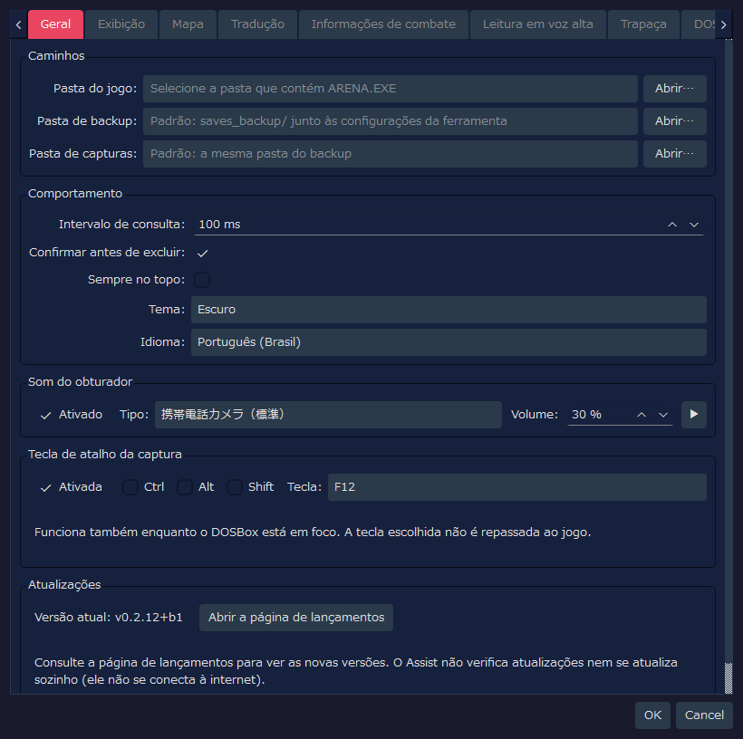
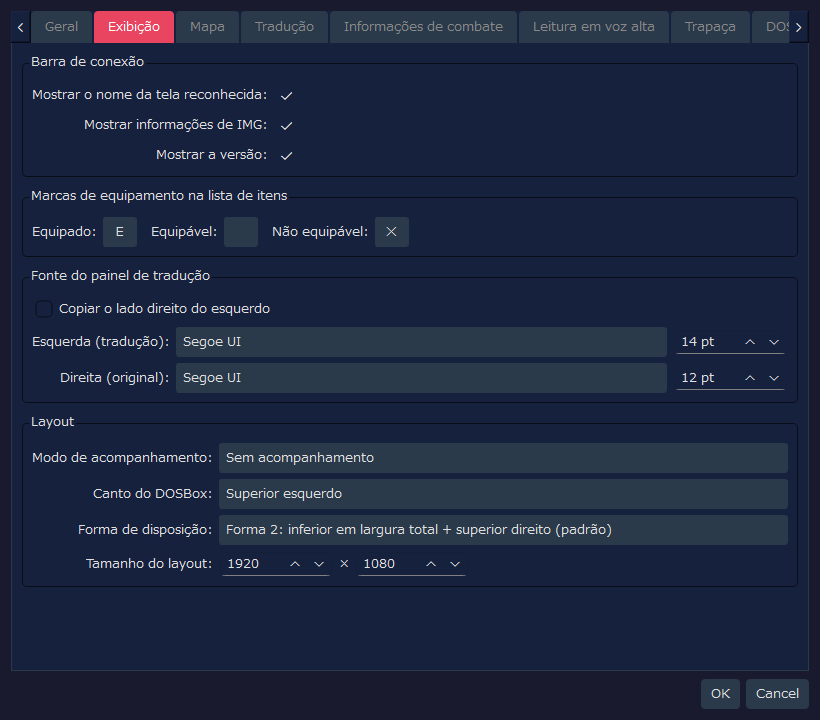
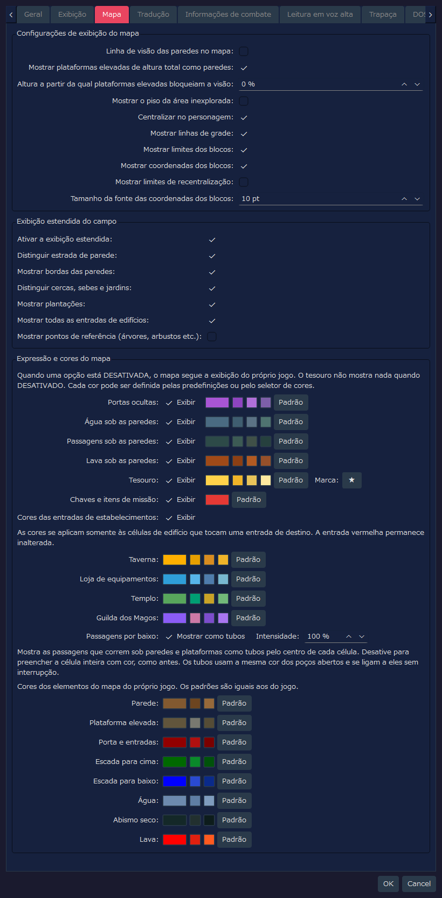
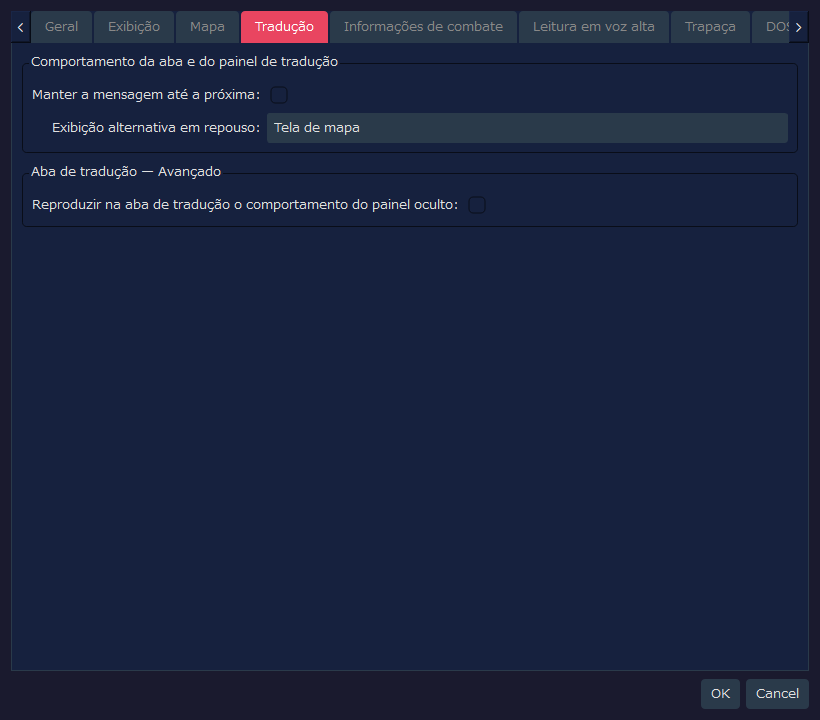
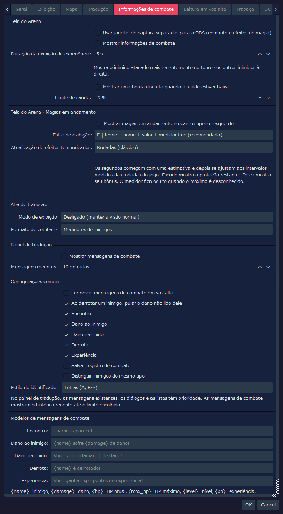
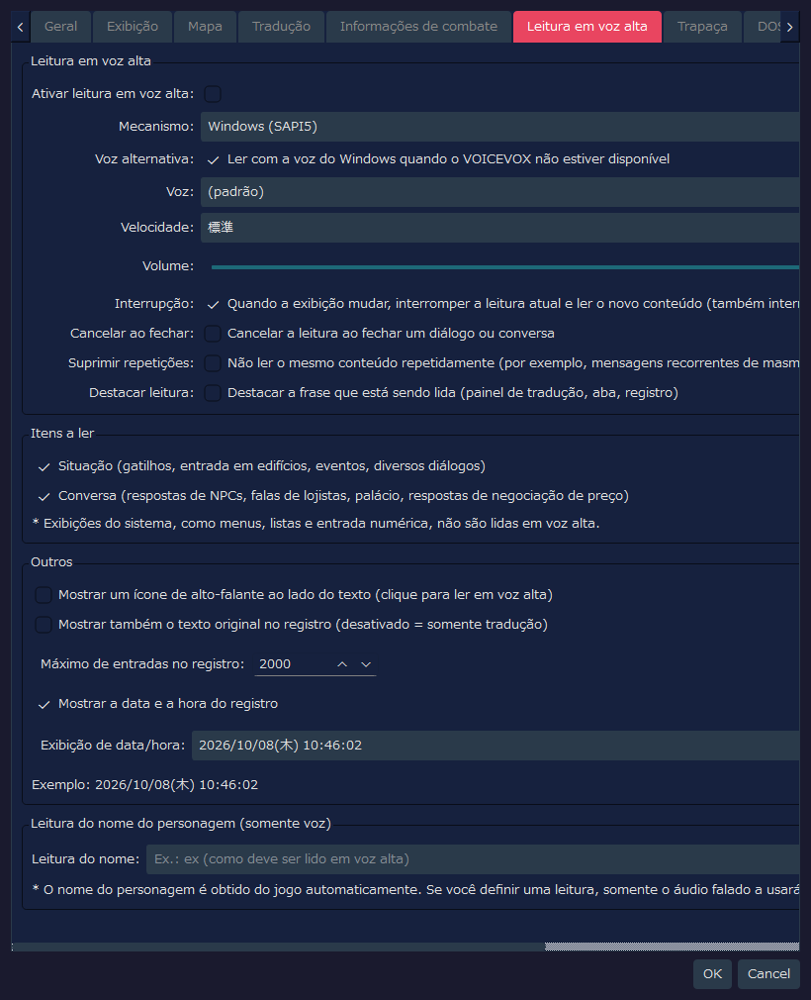
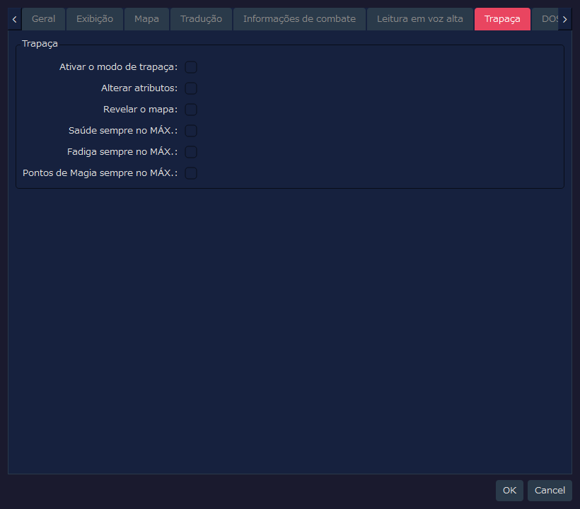
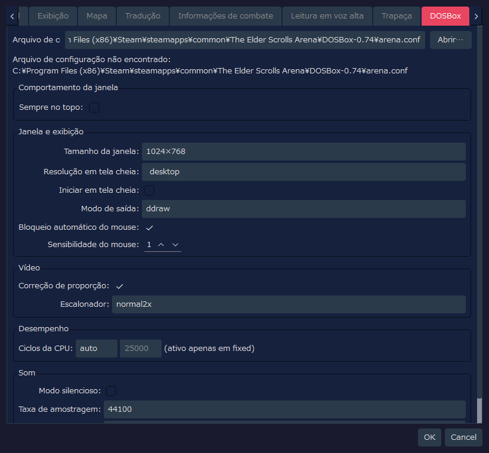

Esta página mostra uma captura de cada aba da janela de configurações do RTESArenaAssist, com uma explicação de cada elemento da interface.
As imagens foram feitas da janela de configurações com as configurações padrão, no seu idioma de exibição e com o tema padrão "Escuro".
Os valores da aba DOSBox refletem não só o arquivo de configurações do próprio Assist, mas também o que foi lido de arena.conf no caminho padrão. Se o arena.conf do seu ambiente for diferente, os valores exibidos também serão diferentes.
Esta aba define os caminhos, o comportamento básico, o som do obturador e a tecla de atalho da captura, e permite conferir a sua versão.

| Rótulo | Padrão | Descrição |
|---|---|---|
Pasta do jogo: | Vazio | A pasta que contém o ARENA.EXE do Arena e os arquivos de jogos salvos. Enquanto não for definida, o gerenciamento de jogos salvos e a leitura dos dados do jogo ficam indisponíveis |
Pasta de backup: | Vazio | Onde os backups dos jogos salvos são guardados. Quando vazia, é usada a pasta saves_backup/ junto ao arquivo de configurações da ferramenta |
Pasta de capturas: | Vazio | Onde as capturas de tela são salvas. Quando vazia, é usada a mesma pasta do backup |
Abrir… | - | Seleciona cada pasta |
| Rótulo | Padrão | Descrição |
|---|---|---|
Intervalo de consulta: | 100 ms | Com que frequência a tela do DOSBox e o estado da memória são verificados. O padrão é curto para que mensagens breves sejam captadas com mais facilidade |
Confirmar antes de excluir: | ATIVADO | Mostra uma janela de confirmação ao excluir capturas ou backups |
Sempre no topo: | DESATIVADO | Mostra a janela principal do Assist à frente das outras janelas |
Tema: | Escuro | Escolhe o tema de cores da interface |
Idioma: | Automático (sistema) | O idioma da interface. Quando vazio, ele é detectado automaticamente a partir do idioma do sistema, e uma mudança passa a valer depois que o aplicativo é reiniciado |
| Rótulo | Padrão | Descrição |
|---|---|---|
Ativado | ATIVADO | Toca um efeito sonoro quando uma captura de tela é salva |
Tipo: | Câmera de celular, padrão (os nomes dos tipos são exibidos em japonês) | O som do obturador a tocar. Você pode escolher entre padrão, versão curta, duplo, agudos realçados e suave |
Volume: | 30 % | O volume de reprodução do som do obturador |
▶ | - | Ouve uma prévia do som do obturador selecionado |
Você pode salvar uma captura apenas pressionando uma tecla, com o foco mantido na tela do jogo (DOSBox). Use-a para capturar mensagens que desaparecem após alguns segundos.
| Item | Padrão | Descrição |
|---|---|---|
Ativada | ATIVADO | Usa a tecla de atalho para capturar |
Ctrl / Alt / Shift | DESATIVADO | Ative para combinar teclas modificadoras |
Tecla: | F12 | A tecla a usar. Você pode escolher entre F5 a F12, PrintScreen, Pause, ScrollLock, Insert, Home, End, PageUp e PageDown |
| Rótulo | Padrão | Descrição |
|---|---|---|
Versão atual: | - | A versão do Assist que você está usando |
Abrir a página de lançamentos | - | Abre no navegador a página de lançamentos do Assist (a lista de Releases). Consulte-a para saber se existe uma versão mais nova |
O Assist não se conecta à internet, portanto não verifica atualizações nem se atualiza sozinho.
Esta aba define a barra de conexão, as marcas de equipamento nas listas de itens, a fonte do painel de tradução e o layout.

| Rótulo | Padrão | Descrição |
|---|---|---|
Mostrar o nome da tela reconhecida: | ATIVADO | Mostra na barra de conexão o nome da tela reconhecida no momento |
Mostrar informações de IMG: | ATIVADO | Mostra na barra de conexão as informações da IMG que está sendo detectada |
Mostrar a versão: | ATIVADO | Mostra a versão do aplicativo na barra de conexão e na barra de status |
| Rótulo | Padrão | Descrição |
|---|---|---|
Equipado: | E | Uma marca de um caractere, exibida na extremidade esquerda dos itens equipados |
Equipável: | Vazio | A marca dos itens equipáveis. O padrão é vazio, portanto nada é exibido |
Não equipável: | ✕ | Uma marca de um caractere, exibida na extremidade esquerda dos itens que não podem ser equipados |
| Rótulo | Padrão | Descrição |
|---|---|---|
Copiar o lado direito do esquerdo | DESATIVADO | Quando ativado, a fonte e o tamanho do lado do texto original ficam iguais aos do lado da tradução |
Esquerda (tradução): | Padrão do aplicativo / 14 pt | A fonte e o tamanho usados para o texto traduzido. Se nenhum nome de fonte foi salvo, é escolhida a fonte padrão do aplicativo para o seu ambiente |
Direita (original): | Padrão do aplicativo / 12 pt | A fonte e o tamanho usados para o texto original em inglês. Como a cópia está DESATIVADA, ele pode ser definido separadamente do lado da tradução |
| Rótulo | Padrão | Descrição |
|---|---|---|
Modo de acompanhamento: | Sem acompanhamento | Escolhe se, quando o DOSBox ou o Assist é movido, o outro o acompanha |
Canto do DOSBox: | Superior esquerdo | O canto de referência da tela onde o DOSBox é posicionado pela organização única e pelo modo de layout |
Forma de disposição: | Forma 2: inferior em largura total + superior direito (padrão) | Como a área é dividida entre o DOSBox e os painéis do Assist. A Forma 2 é a disposição padrão, que usa o canto superior direito e a parte inferior em largura total |
Tamanho do layout: | 1920 x 1080 | O tamanho de toda a área de trabalho no modo de layout |
Esta aba define o mapa de exploração e a exibição estendida do campo.

| Rótulo | Padrão | Descrição |
|---|---|---|
Linha de visão das paredes no mapa: | DESATIVADO | Quando DESATIVADO, as áreas inexploradas atrás das paredes não são registradas no mapa. Quando ATIVADO, fica mais próximo do Arena original, e as áreas vistas através das paredes também são registradas |
Mostrar plataformas elevadas de altura total como paredes: | ATIVADO | Mostra na cor das paredes as plataformas elevadas que ocupam o espaço do chão ao teto. Só muda a forma de classificar as coisas na exibição; o bloqueio da visão não é afetado. As plataformas elevadas que não têm altura total continuam sendo mostradas como plataformas elevadas |
Altura a partir da qual plataformas elevadas bloqueiam a visão: | 0 % | Com a altura do teto como 100%, as plataformas elevadas cujo topo alcança essa altura ou mais bloqueiam a visão no mapa. Em 0%, todas as plataformas elevadas bloqueiam a visão |
Mostrar o piso da área inexplorada: | DESATIVADO | Quando DESATIVADO, apenas as células exploradas mostram a cor do piso, o que oculta a forma da área inexplorada. Quando ATIVADO, o mapa inteiro é mostrado na cor de pergaminho |
Centralizar no personagem: | ATIVADO | Faz o mapa acompanhar o personagem automaticamente quando ele se move. Enquanto o personagem está parado, você pode mover o mapa manualmente |
Mostrar linhas de grade: | ATIVADO | Mostra linhas de grade nos limites das células |
Mostrar limites dos blocos: | ATIVADO | Destaca os limites dos blocos (unidades de 64 casas) no mapa do campo |
Mostrar coordenadas dos blocos: | ATIVADO | Mostra as coordenadas de cada bloco no mapa do campo, para ajudar você a perceber a sua posição |
Mostrar limites de recentralização: | DESATIVADO | Mostra como linhas tracejadas os limites de recentralização do mapa do campo. Uma exibição complementar para investigar ou conferir posições |
Tamanho da fonte das coordenadas dos blocos: | 10 pt | O tamanho do texto dos rótulos de coordenadas dos blocos |
| Rótulo | Padrão | Descrição |
|---|---|---|
Ativar a exibição estendida: | ATIVADO | A chave geral da exibição estendida do mapa do campo. Quando DESATIVADA, a exibição fica próxima do automapa do jogo |
Distinguir estrada de parede: | ATIVADO | Desenha em cores diferentes as estradas transitáveis e as partes intransitáveis, como edifícios e paredes |
Mostrar bordas das paredes: | ATIVADO | Mostra os contornos das paredes e do terreno de borda |
Distinguir cercas, sebes e jardins: | ATIVADO | Diferencia por linhas de ligação o terreno de borda, como cercas, sebes e jardins |
Mostrar plantações: | ATIVADO | Mostra plantações, como milho e campos, com uma cor ou marca própria |
Mostrar todas as entradas de edifícios: | ATIVADO | Mostra também em vermelho as entradas de casas, tavernas, templos, portões da cidade e assim por diante. As entradas de cripta, torre e masmorra são mostradas em vermelho independentemente desta configuração |
Mostrar pontos de referência (árvores, arbustos etc.): | DESATIVADO | Sobrepõe marcas simples para árvores, arbustos, rochas, túmulos, ruínas e assim por diante. Elas são numerosas e dificultam a leitura do mapa, por isso o padrão é DESATIVADO |
O mapa do jogo desenha itens como passagens sob paredes sem diferenciá-los. Aqui você define se quer desenhá-los de forma distinta e a cor de cada elemento. Se você DESATIVAR "Exibir" em uma linha, esse elemento volta à mesma exibição do mapa do jogo (ao DESATIVAR Tesouro, nada é mostrado).
| Rótulo | Padrão | Descrição |
|---|---|---|
Portas ocultas: | ATIVADO | Mostra em uma cor própria as portas ocultas descobertas. Até serem descobertas, continuam sendo paredes |
Água sob as paredes: | ATIVADO | Mostra em uma cor própria os canais de água que passam sob as paredes. Eles não são mostrados até que você realmente passe por lá e os revele |
Passagens sob as paredes: | ATIVADO | Mostra as passagens que correm sob as paredes. Elas não são mostradas até que você realmente passe por lá e as revele |
Lava sob as paredes: | ATIVADO | Mostra em uma cor própria a lava que corre sob as paredes. Ela não é mostrada até que você realmente passe por lá e a revele |
Tesouro: | ATIVADO | Sobrepõe uma marca onde você obteve um tesouro. Você pode mudar o caractere da marca no campo à direita. Enquanto "Revelar o mapa" na aba Trapaça estiver ATIVADO, todos os lugares com tesouro são mostrados, tenha você obtido o tesouro ou não |
Chaves e itens de missão: | ATIVADO | Entre os tesouros, mostra em outra cor as marcas de chaves e itens de missão. Quando DESATIVADO, eles são mostrados na mesma cor do tesouro. Não são mostrados quando Tesouro está DESATIVADO |
Cores das entradas de estabelecimentos: | ATIVADO | Nos mapas de cidades, substitui por uma cor para cada estabelecimento as células na cor de edifício que tocam a entrada de uma taverna, loja de equipamentos, templo ou Guilda dos Magos. A cor da entrada vermelha não muda. A cor de cada estabelecimento pode ser alterada nos campos abaixo |
Passagens por baixo: | Mostrar como tubos / Intensidade 100 % | Mostra as passagens que correm sob paredes e plataformas elevadas como tubos pelo centro da célula. Quando DESATIVADO, a célula inteira é preenchida com cor, como antes. A cor dos tubos é a mesma dos poços e se liga a eles sem interrupção. Reduzir a Intensidade deixa os tubos mais discretos |
Clique na amostra de cor à direita de cada item para escolher qualquer cor. Os botõezinhos ao lado são cores sugeridas, fáceis de escolher, e Padrão é o botão que a devolve à cor original. Você pode mudar da mesma forma as cores dos elementos do próprio jogo: parede, plataforma elevada, porta e entradas, escada para cima e para baixo, água, abismo seco e lava (os padrões são as mesmas cores do jogo).
Esta aba define a exibição complementar do painel de tradução e da aba Tradução.

| Rótulo | Padrão | Descrição |
|---|---|---|
Manter a mensagem até a próxima: | DESATIVADO | Define se as mensagens de gatilhos e de interação com objetos permanecem no painel de tradução até a chegada da próxima mensagem |
Exibição alternativa em repouso: | Tela de mapa | Escolhe o que mostrar em toda a aba Tradução durante a exploração quando não há texto traduzido. Por padrão, a tela de mapa tem prioridade |
| Rótulo | Padrão | Descrição |
|---|---|---|
Reproduzir na aba de tradução o comportamento do painel oculto: | DESATIVADO | Quando ATIVADO, os resultados da tradução e as mensagens de diálogo são mostrados na aba Tradução, como quando o painel de tradução está oculto. Uma configuração avançada para verificação |
Você pode substituir partes de uma tradução incluída pela sua ou adicionar um novo idioma.
Exportar um modelo (para criar um novo idioma, escolha (modelo em branco para um novo idioma)), clique em Exportar... e salve o arquivo JSON. Se ativar Incluir o original em inglês, o original em inglês é incluído (o original do texto do jogo só é incluído em um computador em que a pasta do jogo esteja configurada e o dicionário tenha sido criado). Salve-o fora da pasta de traduções (veja abaixo).text das entradas que quiser mudar. Entradas com text vazio mantêm a tradução incluída (em um novo idioma, a do idioma em meta.fallback). Não altere as chaves nem os marcadores como %xx e {name} (entradas com marcadores que a tradução de referência não tem, ou com < ou >, não são carregadas). source (o original em inglês) e ref (uma tradução para consulta) não são usados ao carregar.lang no início (um código de idioma, por exemplo tr) e meta.display_name (o nome exibido na lista de idiomas). meta.fallback é o idioma incluído usado para entradas não traduzidas (en por padrão); com meta.direction igual a rtl, o texto é exibido da direita para a esquerda.Importar um arquivo de tradução, clique em Importar... e escolha o arquivo editado. Ele é importado se passar nas verificações. Um novo idioma é adicionado aos idiomas de exibição da guia Geral. As alterações entram em vigor após reiniciar o aplicativo.O modelo de um idioma incluído traz a tradução atual de todas as entradas. Apague as entradas que não for alterar ou deixe o text delas vazio. As entradas mantidas ficam fixas na sua redação e não recebem melhorias posteriores da tradução incluída.
Exemplo 1: alterar só uma entrada da tradução alemã incluída (apenas as entradas que você escrever são substituídas).
{
"schema": "rtesaa.user_translation",
"schema_version": 1,
"lang": "de",
"texts": {
"ui_app": {
"settings.title": "Meine Einstellungen"
}
}
} |
Exemplo 2: um novo idioma (turco). ref é só para consulta e não é usado ao carregar.
{
"schema": "rtesaa.user_translation",
"schema_version": 1,
"lang": "tr",
"meta": { "display_name": "Türkçe", "fallback": "en", "direction": "ltr" },
"texts": {
"ui_app": {
"settings.title": { "ref": "Settings", "text": "Ayarlar" }
}
}
} |
Os arquivos importados aparecem na lista Carregados. Selecione um e clique em Excluir para voltar à tradução incluída (um novo idioma é removido). Abrir pasta abre a pasta translations, ao lado do arquivo de configurações. Os JSON colocados ali são carregados automaticamente ao iniciar. Em um idioma adicionado, documentos como o manual são exibidos em inglês.
Aqui você define separadamente onde o combate e as magias em andamento são exibidos. Os novos recursos de exibição, leitura em voz alta e salvamento vêm DESATIVADOS por padrão. Os valores de configuração salvos por versões de desenvolvimento anteriores são mantidos como estão. O texto exibido está disponível em japonês, inglês, espanhol, alemão, francês, italiano, russo, chinês simplificado e português do Brasil.

| Item | Padrão | Descrição |
|---|---|---|
Usar janelas de captura separadas para o OBS (combate e efeitos de magia) | DESATIVADO | Reúne as informações de combate e as magias em andamento em uma só janela que você pode selecionar na captura de janela do OBS |
Mostrar informações de combate | DESATIVADO | Mostra no topo da tela o inimigo com quem você trocou golpes mais recentemente, que foi encontrado e está à vista, e à direita os outros inimigos vivos encontrados, mesmo fora da vista. Você pode conferir saúde, fadiga, pontos de magia, o dano causado e as derrotas. O dano que você recebe é mostrado na borda inferior da área de exploração |
Duração da exibição de experiência: | 5 s | Mostra a experiência no canto inferior direito no momento em que você a ganha e remove cada quadro após o número de segundos indicado. Quando você ganha mais em sequência, os quadros mais antigos são movidos para a esquerda (1 a 60 segundos) |
Mostrar uma borda discreta quando a saúde estiver baixa | DESATIVADO | Quando a saúde cai até a porcentagem indicada ou menos, faz a borda da tela de exploração piscar de leve. Pode ser ativado mesmo que você não use a exibição de inimigos das informações de combate |
Limite de saúde: | 25% | A porcentagem em que a borda de saúde baixa começa a aparecer (1 a 99% da saúde máxima) |
A exibição do dano recebido desaparece automaticamente cerca de 5 segundos depois de ocorrer. A mesma regra vale para a visão de inimigos em qualquer lugar. Quando o mapa ou as coordenadas não estão determinados, os inimigos não são mostrados por suposição.
Para gravar com o OBS, ATIVE esta configuração, depois escolha o overlay do RTESArenaAssist em "Captura de janela" (o título da janela é exibido em japonês em todos os idiomas), permita a transparência e sobreponha-o ao vídeo do jogo. As informações de combate e as magias em andamento aparecem na mesma fonte.
| Item | Padrão | Descrição |
|---|---|---|
Mostrar magias em andamento no canto superior esquerdo | DESATIVADO | Mostra o estado de Luz, Escudo, Força, Resistência ao Fogo e Levitar |
Estilo de exibição: | E | Ícone + nome + valor + medidor fino (recomendado) | Escolha entre A "Nome + valor restante", B "Nome + medidor horizontal", C "Ícone + medidor horizontal", D "Ícone + sombreado horário", E "Ícone + nome + valor + medidor fino" e F "Etiqueta compacta" |
Atualização de efeitos temporizados: | Rodadas (clássico) | Escolhe se Luz, Resistência ao Fogo e Levitar são atualizados em rodadas ou em segundos estimados, uma vez por segundo. Os segundos são corrigidos a partir do intervalo de progresso no jogo, portanto não são necessariamente um múltiplo fixo quando a velocidade de progresso muda, por exemplo com DETAIL |
Escudo mostra a proteção restante, e Força mostra o valor do aumento. Quando o valor máximo não pode ser confirmado, como ao conectar no meio do jogo, o medidor pode ser omitido. A exibição em segundos é uma estimativa, e o momento em que um efeito termina segue o estado no jogo.
| Item | Padrão | Descrição |
|---|---|---|
Modo de exibição: | Desligado (manter a visão normal) | Escolha entre manter a visão normal, usar a visão normal junto com as informações de combate e mostrar as informações de combate em tela cheia |
Formato de combate: | Medidores de inimigos | Quando as informações de combate são mostradas, escolhe entre texto e a exibição com medidores de inimigos |
| Item | Padrão | Descrição |
|---|---|---|
Mostrar mensagens de combate | DESATIVADO | Mostra o texto de combate no painel de tradução. Quando aparece uma mensagem, conversa ou lista já existente, ela tem prioridade |
Mensagens recentes: | 10 entradas | Mostra as 1 a 50 linhas de combate mais recentes. Quando o número é excedido, as linhas mais antigas são removidas e as novas são acrescentadas |
| Item | Padrão | Descrição |
|---|---|---|
Ler novas mensagens de combate em voz alta | DESATIVADO | Quando a leitura em voz alta está ativada de forma geral, lê as novas linhas de combate na ordem em que ocorrem. Não exclui linhas recentes idênticas, e o próximo dano não interrompe a leitura anterior |
Ao derrotar um inimigo, pular o dano não lido dele | ATIVADO | Ao derrotar um inimigo, interrompe o dano causado a esse inimigo e recebido dele que está sendo reproduzido, bem como a parte não lida. A leitura dos outros inimigos continua |
Salvar registro de combate | DESATIVADO | Salva o histórico de combate separadamente do registro normal. Somente quando há registros é exibida uma opção de alternância na aba Registro |
Distinguir inimigos do mesmo tipo | DESATIVADO | Somente quando há vários inimigos com o mesmo nome, acrescenta um símbolo distintivo após o nome |
Estilo do identificador: | Letras (A, B…) | Escolha A, B… ou 1, 2… |
Modelos de mensagens de combate | O texto padrão de cada idioma | Edita o texto de Encontro, Dano ao inimigo, Dano recebido, Derrota e Experiência. Campos vazios e espaços reservados que não podem ser usados voltam ao texto padrão |
Esta aba define a leitura em voz alta do texto traduzido, os itens a ler, a exibição do registro e a leitura do nome do personagem.

| Rótulo | Padrão | Descrição |
|---|---|---|
Ativar leitura em voz alta: | DESATIVADO | Ativa todo o recurso de ler em voz alta o texto traduzido |
Mecanismo: | Windows (SAPI5) | Escolhe o mecanismo de leitura. O VOICEVOX pode ser escolhido quando um mecanismo VOICEVOX local está em execução |
Voz alternativa: | ATIVADO | Quando o VOICEVOX está escolhido mas indisponível, lê com a voz do Windows as frases que não puderam ser lidas. Quando DESATIVADO, elas não são lidas |
Voz: | (padrão) | Exibida quando o mecanismo é Windows (SAPI5). A voz SAPI a usar. Com (padrão), é usada a voz padrão do sistema operacional |
Personagem: | O personagem do ID de estilo 0 | Exibido quando o mecanismo é VOICEVOX. O personagem do VOICEVOX usado na leitura |
Estilo: | ID de estilo 0 | Exibido quando o mecanismo é VOICEVOX. O estilo de voz do personagem escolhido |
🔊 Testar | - | Exibido quando o mecanismo é VOICEVOX. Lê uma frase curta como teste com o personagem e o estilo escolhidos |
Velocidade: | Padrão | A velocidade da leitura |
Volume: | 100 | O volume da leitura. Defina na faixa de 0 a 100 |
Interrupção: | ATIVADO | Quando a exibição muda, interrompe a leitura anterior e lê o novo conteúdo. Também interrompe quando você volta de uma resposta de NPC para o menu |
Cancelar ao fechar: | DESATIVADO | Interrompe a leitura em andamento quando um diálogo ou uma conversa é fechado |
Suprimir repetições: | DESATIVADO | Não lê o mesmo conteúdo repetidamente (como mensagens recorrentes de masmorra). Ele continua no registro |
Destacar leitura: | DESATIVADO | Colore a frase que está sendo lida (painel de tradução, aba Tradução, registro) |
Quando o VOICEVOX não é encontrado, é exibido "Inicie o VOICEVOX para poder selecioná-lo (127.0.0.1:50021).". Depois de iniciar o VOICEVOX e reabrir a janela de configurações, você pode escolher o personagem e o estilo.
| Rótulo | Padrão | Descrição |
|---|---|---|
Situação (gatilhos, entrada em edifícios, eventos, diversos diálogos) | ATIVADO | Torna item de leitura os textos que explicam a situação, como gatilhos, entrada em edifícios, eventos e diversos diálogos |
Conversa (respostas de NPCs, falas de lojistas, palácio, respostas de negociação de preço) | ATIVADO | Torna item de leitura os textos de conversa, como respostas de NPCs, falas de lojistas, o palácio e respostas de negociação de preço |
Exibições do sistema, como menus, listas e entrada numérica, não são lidas em voz alta.
| Rótulo | Padrão | Descrição |
|---|---|---|
Mostrar um ícone de alto-falante ao lado do texto (clique para ler em voz alta) | DESATIVADO | Mostra um ícone de alto-falante ao lado do texto exibido, para ler em voz alta ao clicar |
Mostrar também o texto original no registro (desativado = somente tradução) | DESATIVADO | Mostra o texto original em inglês junto com a tradução no registro de tradução. Quando DESATIVADO, apenas a tradução é exibida |
Máximo de entradas no registro: | 2000 | O limite superior do número de entradas de registro salvas. Os registros mais antigos além dele são excluídos automaticamente |
Mostrar a data e a hora do registro | ATIVADO | Mostra a data e a hora do registro nas entradas do registro |
Exibição de data/hora: | yyyy/MM/dd(aaa) HH:mm:ss | O formato de exibição da data e da hora do registro. Você pode escolher uma predefinição ou um formato personalizado |
| Rótulo | Padrão | Descrição |
|---|---|---|
Leitura do nome: | Vazio | Substitui o nome do personagem obtido automaticamente do jogo pela leitura que você indicar, somente na leitura em voz alta. O nome original permanece na exibição e no registro |
Esta aba define recursos auxiliares, como reescrever valores do jogo e funções de sempre no MÁX.

| Rótulo | Padrão | Descrição |
|---|---|---|
Ativar o modo de trapaça: | DESATIVADO | A chave geral dos recursos de trapaça. Mesmo que apenas esta seja ATIVADA, nada muda se você não ATIVAR as subconfigurações |
Alterar atributos: | DESATIVADO | Permite alterações de status, como editar atributos |
Revelar o mapa: | DESATIVADO | Enquanto a trapaça estiver ativada, mostra o mapa inteiro |
Saúde sempre no MÁX.: | DESATIVADO | Enquanto a trapaça estiver ativada, devolve a saúde atual ao máximo se estiver menor |
Fadiga sempre no MÁX.: | DESATIVADO | Enquanto a trapaça estiver ativada, devolve a fadiga atual ao máximo |
Pontos de Magia sempre no MÁX.: | DESATIVADO | Enquanto a trapaça estiver ativada, devolve os pontos de magia atuais ao máximo |
Esta aba lê o arena.conf do DOSBox e define a exibição da janela, o vídeo, o desempenho e o som.

| Rótulo | Padrão | Descrição |
|---|---|---|
Arquivo de configuração | arena.conf no caminho padrão | O arquivo de configuração do DOSBox. Quando a configuração do próprio Assist está vazia, o local padrão da versão Steam do Arena é lido como caminho padrão |
Abrir… | - | Seleciona qualquer arena.conf |
Sempre no topo: | DESATIVADO | Mostra a janela do DOSBox à frente das outras janelas |
| Rótulo | Padrão | Descrição |
|---|---|---|
Tamanho da janela: | 1024×768 | windowresolution. Escolha entre as predefinições; quando personalizado é escolhido, edite os campos numéricos L/A |
Resolução em tela cheia: | desktop | fullresolution. Indica a resolução usada em tela cheia |
Iniciar em tela cheia: | DESATIVADO | fullscreen. Indica se o DOSBox inicia em tela cheia |
Modo de saída: | ddraw | output. O método de saída de renderização do DOSBox |
Bloqueio automático do mouse: | ATIVADO | autolock. Bloqueia automaticamente o mouse dentro da tela do DOSBox |
Sensibilidade do mouse: | 100 | sensitivity. A sensibilidade do mouse dentro do DOSBox |
| Rótulo | Padrão | Descrição |
|---|---|---|
Correção de proporção: | ATIVADO | aspect. Corrige a proporção da imagem |
Escalonador: | normal2x | scaler. O filtro de ampliação da tela do DOSBox |
| Rótulo | Padrão | Descrição |
|---|---|---|
Ciclos da CPU: | fixed 25000 | cycles. Indica a velocidade de emulação da CPU. Com fixed, o campo numérico à direita fica ativo |
| Rótulo | Padrão | Descrição |
|---|---|---|
Modo silencioso: | DESATIVADO | nosound. Desativa o som do DOSBox |
Taxa de amostragem: | 44100 | rate. A taxa de amostragem do mixer |
Dispositivo MIDI: | default | mididevice. O dispositivo usado para a reprodução de MIDI |